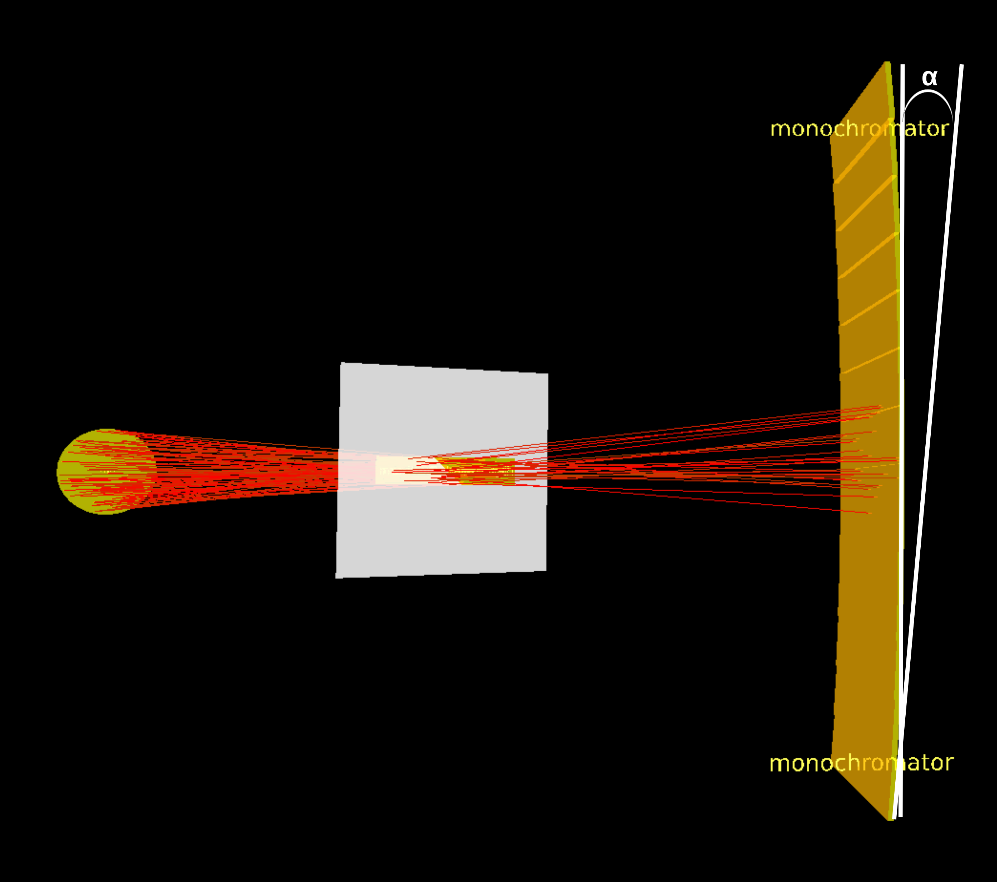
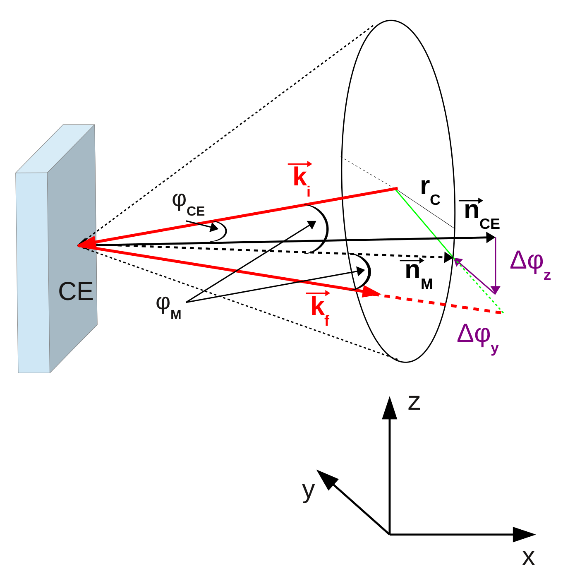

The new monochromator module is an upgrade of the existing one. The older module is
kept for backward-compatibility, however it is strongly recommended to change to the
new one since only this module will be maintained. All known functionalities
were kept and two were added: The "transmission" geometry and the handling of neutrons that are not reflected by the crystal lattice.
They are explained below.
Moreover, the additional simulation run to
determine the correct normalisation has become obsolete. The new module now handles
the normalisation of the outgoing neutrons properly if the peak reflectivity,
i.e. the reflectivity of the monochromator crystal for neutrons of the peak wavelength
and negligible divergence, is given
. The peak reflectivity is usually known
from dedicated measurements. Note that a correct normalisation of the outgoing intensity is only
possible, if realistic, non-zero values for the mosaicity and the d-spread are given. If an ideal crystal
needs to be simulated, i.e. the mosaicity or d-spread are very close to zero,
then it is possible that the outgoing intensity is larger than the incoming one. In this case you can set the
reflectivity normalisation to a value below 1. If both the d-spread and the mosaicities are set to 0 then
the crystal will only transmit the peak wavelength, resulting in a complete loss of intensity in a simulation.
A monochromator element is characterized by its geometric and crystallographic properties. The corresponding simulation parameters are set either on the main GUI window or in the parameter file. The module can handle flat crystals and focusing geometries. In addition, it is now possible to set up an array of monochromators/analyzers. The geometric parameters of a monochromator element are: position, horizontal and vertical offset angles (conforming to Eulerian rotation), horizontal and vertical 'Bragg angles' with reference to the final coordinate system of the previous module, and size of the CE. The Bragg angles can be rotated w.r.t. the crystal surface to allow for the transmission geometry (offcut orientation). For focusing geometries, additional parameters need to be specified to determine the curved shape of the monochromator element. The crystal structure can be characterized by setting the parameters d-spacing, d-spread (Lorentzian and Gaussian), mosaicity and reflectivity. Detailed parameter definitions can be read from the tables in section B. In the output frame X'Y'Z', all neutron coordinates are referring to the moment when the neutrons are just reflected from the crystal taking the new directions and probability weights.
There are two new features: The geometry choice "Transmission" handles a monochromator in transmission geometry.
The option "transmission treated" creates a transmitted beam in addition to the one reflected by the crystal lattice.
In this case, Nrep+1, i.e. usually 2, outgoing trajectories are generated for each incoming trajectory (hitting a crystal element),
Nrep in the direction of reflection and 1 in the original direction.
Important: In this mode, the global coordinate system
is not altered by the 'standard frame generation', but needs to be defined as a 'user defined frame' or changed in a subsequent frame module.
Fig. CE
A. Options
For flat crystal simulation it is enough to use one single CE. The simulation of a curved focussing surface works with a matrix of CE-s (as they are really constructed), therefore one needs all positions, orientations and size parameters. For convenience, the deviations relative to the corresponding main values given in the Parameter File have to be defined and read from a Focus File properly formatted.
The options are:
| 1. Crystal_flat: | Simulates a flat rectangular generally (h,k,l) oriented offcut crystal. | -O1 |
| 2. Crystal_focus: | Activates the Focus File generation for a) λ-focussing, b) spherical c) vertically focussing cylinder or d) double focussing cylinder M/A geometry. | -O2 |
| 3. Crystal_focus_dat: | Uses optional Focus File independently generated by separate programs not included in this module. | -O3 |
Option 2 takes advantage of an internal code of the module, which automatically generates the Focus File for a) l-focussing, b) spherical c) vertical cylinder d) or double focussing M/A geometry. This option is suitable, for example, for setting analysers in a near-backscattering geometry to provide for example constant wavelength selection for neutrons scattered from the center of the sample.

One example for vertical focusing monochromator geometry. α is the angle between the tangent of the central element that is perpendicular to the beam in this example and the lowest (the highest) monochromator element (see 'Focus Option').B. Parameter and file descriptions
Option Crystal_Flat
| File | Format | Examples Attached | Command Option |
| Parameter File | This files contains parameters describing a crystal element (CE). It can be read or created/modified by the VITESS shell. | crys.par | -P |
- MAIN PARAMETERS
| Parameter | Physical Symbol, Description | Range, Examples | Command Option |
| repetition
[-] |
If this integer > 1, the trajectory is used multiple times for better statistics. | >= 1 | -A |
| mosaic fwhm horizontal, vertical [deg] |
ξY, ξZ
Horizontal and vertical fwhm components of the 2-dimensional Gaussian mosaic distribution. |
PG(002): 0.2 0.8 deg General: 0.001 1deg |
-m, -M |
| d-spread [-] |
Δd / d
Fwhm of the d-spacing distribution function (Lorentzian and Gaussian options) divided by lattice parameter under consideration. It is zero for a perfect crystal. |
PG(002): 0.2 - 2´ 10-3
Si(111): 0.1 - 2´ 10-4 |
-D |
| Peak reflectivity [-] |
R
(Experimentally determined) peak reflectivity of this monochromator. |
0 ... 1 default: 1 |
-R |
| Transmission treated [-] |
If chosen, a tranmitted beam is generated in addition to the reflected beam. Note that 'transmission treated' means that 'standard frame generation' does not change the co-ordinate system. |
0 or 1 | -o |
| Total scattering [1/cm] |
μtot
Macroscopic total scattering cross-section in the crystal |
0 ... 1 | -c |
| Absorption [1/cm] |
μabs
Macroscopic absorption cross-section in the crystal for 1.798 Å |
0 ... 1 | -C |
| Geometry [-] |
'Reflection' : Monochromator used in reflection geometry |
1: Reflection 2: Transmission |
-X |
| d-distribution | Lorentzian (1), Gaussian (2) | 1, 2 | -d |
- FILE INPUT PARAMETERS
| Parameter | Physical Symbol, Description | Range, Examples |
| main position
[cm] |
x, y, z
Reference point (position) of the center of the monochromator/analyser-system in the frame provided by the former module. The position of each single CE is defined by (x,y,z) +deviation from (x,y,z). The deviation is read from focus data file. For the flat Geometry option, (x,y,z) is simply the center position of the rectangular CE. |
x = distance to CE y = z = 0.0 |
| thickness, width, height of CE [cm] |
t, w, h
Thickness, width and height give depth, horizontal and vertical dimensions of the rectangular CE. For each single CE the dimensions will be (t,w,h)+deviation from (t,w,h) the last being read from focus data file. |
t = 0.0 0.5 cm w = h = 0.5 20 cm
|
| 'surface offset' angle horizontal, vertical [deg] |
Euler angles: Offset of the crystal surface from backscattering. See also 'Bragg offset', next row |
see next row |
| 'Bragg offset' angle horizontal, vertical [deg] |
Euler angles θ,ψ: Offset from backscattering of the crystal planes determining the Bragg reflection.
A rotation first about the Z axis (θ ) and then about the (new) Y axis (ψ ) gives the orientation of the planes of the center of the monochromator/analyzer.
The orientation of each single CE is given by (θ, ψ) + deviation from (θ, ψ) the last being read from the focus data file. |
θ = ψ = 0.0 exact backscattering;
θ: 0 ... 90 deg |
| d-spacing [Å] |
d Lattice distance corresponding to a reflection from a (h,k,l) crystal plane |
PG(002): 3.332 Å
Si(111): 3.135 Å Ge(113): 1.703 Å Cu(220): 1.272 Å |
| order of reflection [-] |
N According to Braggs Law: N λ = 2 d sin φBr |
1, 2, ... |
| output frame definition 'standard frame generation' |
If 'user defined frame' is chosen, all parameters defining the output frame (X', Y', Z', hor. angle, vert. angle) are taken from the input values (see following two rows). |
one point on the reflected beam axis |
| X', Y', Z' [cm] |
x', y', z'
In 'user defined frame': The position of the output frame in the original frame. (x', y', z') represents the translation vector
applied to shift the origin of the original (input) frame to the new (output) position. |
one point on the reflected beam axis |
| output horizontal, vertical angle [deg] |
Θ, Ψ In 'user defined output frame', these angles are taken to generate the output frame: After the translation, a Θ rotation about the Z axis and then a Ψ rotation about the (new) Y axis defines a new orientation. If "standard frame generation" is chosen, the output frame is rotated until the new X axis is parallel to the reflected beam. |
Θ = 180 deg, Ψ= 0.0: exact backscattering;
Θ = 180 deg, Ψ= -2 ψ, |
- Please note that the parameter file format used for the old monochromator module remains unchanged. However, the 'mosaic range' and 'd-range' parameters became obsolete and are not shown anymore, when the parameter file is open for editing.
Option Crystal_Focus
- same as Option Crystal_flat
-FOCUS PARAMETERS
| Parameter | Physical Symbol, Description | Range, Examples | Command Option |
| focusing option: 1 constant lambda 2 spherical 3 vert. cylinder 4 double focussing |
This parameter defines the focusing geometry.
'λ-focusing' builds a shape close to that of a sphere, but identical wavelength for all for source and focal point on a close to backscattering
'Spherical' puts the crystal elements on the surface of a sphere with radius 'radius vert.' |
1, 2, 3, 4 | -g |
| number of CE horizontal, vertical [-] |
The number of columns and rows (nH, nV) of the created CE-matrix. nH is not used for the option 'vert. cylinder', where only 1 element per row is assumed |
2 50 | -H,-V |
| radius horiz. [cm] |
Radius of focusing in horizontal direction for a double focusing monochromator. Not used for the other focusing options. |
200 cm, 0 cm to focus only vertically |
-s |
| radius vert. [cm] |
λ-focusing: distance from the sample center to the bottom row of the CE-matrix. spherical : radius of the sphere vert. cylinder : radius of the vertical cylinder double focusing: Radius of focusing in vertical direction |
200 cm | -r |
| angle vert. [deg] |
Angular offset ψ0 of the bottom row of the crystal element-matrix relative to the horizontal plane containing the sample center. It is needed for all geometry options except 'double focussing', where a vertically symmetrical geometry is assumed. |
-3 deg | -a |
| gap between columns, rows [cm] |
The distance between adjacent crystal elements in horizontal and vertical direction
horizontal: used for 'spherical' and 'double focusing'' vertical : used for all options except for 'λ-focusing' |
0.05 | -h,-v |
| orient. dev. hor., vert. [deg] |
Total range of the deviation Δθ, Δψ from the theoretical orientation (θ, ψ) of a crystal element in horizontal and vertical direction. The real orientation is determined by a Monte Carlo choice within [θ - 1/2Δθ, θ + 1/2Δθ] and [ψ - 1/2Δψ, ψ + 1/2Δψ] resp. |
0.1 | -t,-T |
Description of the focus file (filename must be given as input):
| File | Format | Examples Attached | Command Option |
| focus file |
First row includes 2 integer numbers: nH, nV, the number of columns and rows of the created CE-matrix. (H = horizontal, V = vertical.)
Next nH, nV rows are created by two program loops (internal loop: V) computing 8 values representing deviations from the main values for each single CE. These are interpreted by the program as follows: The position of each single CE is (x,y,z) + deviation from (x,y,z) as read from columns 1 - 3. The dimension of each single CE (thickness, width, height) is (t,w,h) + deviation from (t,w,h) as read from columns 4 - 6. The orientation (hor., vert.) of each single CE is (θ, ψ) + deviation from (θ, ψ) as read from columns 7, 8. |
lamb_foc.dat, | -G |
Option Crystal_focus_dat
- focus file (as described above) which has to be given externally, focus file name should be give as input.
For each incoming trajectory the d-spacing d is randomized according to the given d-spread. The randomization takes into account whether the distribution is Gaussian or Lorentzian. If the d-spread is zero, this step is obviously skipped. Then the Bragg-angle φBr of the trajectory is calculated taking into account its wavelength and the current d-spacing value: φBr = sin-1(λ/(2*d)). Now one needs to calculate the probability that the monochromating crystal can reflect this neutron according to the Bragg condition.
In general, the Bragg condition is not fulfilled by the orientation of the CE, see Fig. Cone. The angle φCE between the incoming neutron ki and the CE normal nCE is usually not equal to φCE,Br = 90° - φBr, since the incoming beam can be divergent and the spectrum usually consists of a finite waveband. To assign a proper weight to the outgoing neutron the probability of finding a mosaic piece that fulfills the Bragg condition needs to be calculated. All possible normal orientarions of such mosaic elements describe a Bragg cone around ki with the radius rc = |ki|tan(φCE,Br). Since all monochromators have a finite horizontal and vertical mosaicity, the Bragg cone can be reached starting from nCE by two rotations around the y and z axes. To be in accordance with the given mosaic distributions and to obtain the correct probability, the rotation procedure is done as following: The first (e.g. vertical) rotation (Δφz) is randomised using a Gaussian with the given mosaic spread (FWHM of the corresponding distribution). Obviously, this first rotation fixes Δφy, the angle of the second (e.g. horizontal) rotation, since nM must lie on the Bragg cone. The absolute probability for the reflection of this neutron is then determined by looking up the value of the Gaussian function of the latter (horizontal) mosaicity corresponding to Δφy. The norm of the Gaussian function is such that it is in accordance with the peak reflectivity of the monochromator element. This norm is determined in each simulation during the initialisation of the module and is based on the given Bragg angles, d-spread and mosaicity.In the output, the new probability weight of a neutron mirrors adequately the given d- and mosaic distributions. The new coordinates and the direction of the neutron ki are computed consecutively by taking into account the exact orientation of the reflecting mosaic piece nM.
Fig. Cone

Last modified: Dec 03 15:00:00 MET 2013 , D. Nekrassov